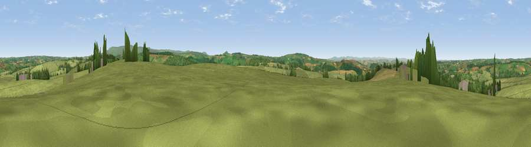

Viewpoint near Lewdown
#20741 in England · top 37% of its area beats it · near LewdownWhere it is
The exact computed spot (SX 44125 86375). Click the marker for map links.
The view, rendered

A 360° render of this exact spot computed from the terrain model, tree cover and land cover — summer colours, afternoon light, calibrated against photographs of famous viewpoints. Real trees, hedges and buildings will differ in detail.
The panorama
Grey silhouette: terrain skyline in each direction (720 bearings, Earth curvature and refraction included). Dashed green: skyline with trees (+15 m) and buildings (+8 m) as obstacles. Blue strip: how far the ground is visible on each bearing.
Where the view opens
Wedge length = distance to the farthest visible ground on that bearing (vegetation-aware). Rings at 10, 25 and 50 km.
What fills the view
84% grassland · 11% woodland · 5% cropland · 1% built-up
Angular shares of the visible panorama (visual magnitude), not map area. Landscape diversity 0.25 (0–1 Shannon).
Key numbers
More beautiful places nearby
The staircase of upgrades: each row has a higher view potential than everything closer. Driving times are estimates from straight-line distance, calibrated against real road routing — check an actual route before setting out.
| Place | Direction | Drive | Score |
|---|---|---|---|
| Viewpoint near Lewdown | W · 1 km | ~2 min | 53.5 |
| Viewpoint near Lewdown | E · 4 km | ~9 min | 58.8 |
| Viewpoint near Chillaton | SSW · 5 km | ~11 min | 63.4 |
| Viewpoint near Chillaton | SSW · 6 km | ~12 min | 65.2 |
| Brent Tor | SSE · 7 km | ~14 min | 73.4 |
| Viewpoint near Lydford | E · 10 km | ~19 min | 73.7 |
| Sourton Tors | ENE · 11 km | ~20 min | 74.8 |
| Great Links Tor | E · 11 km | ~21 min | 77.8 |
50.65614, -4.20655 · source: screening · position refined by local search. Computed location — check access rights before visiting.